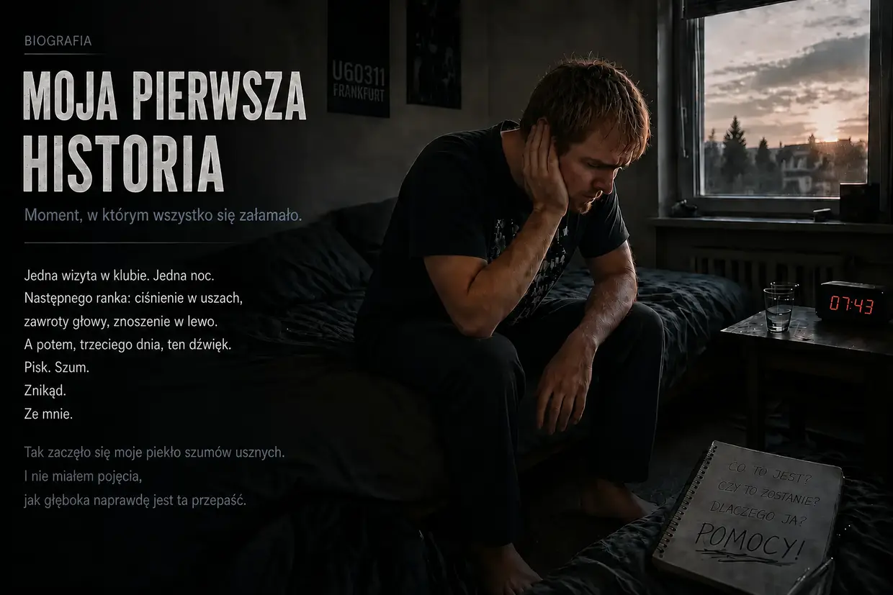
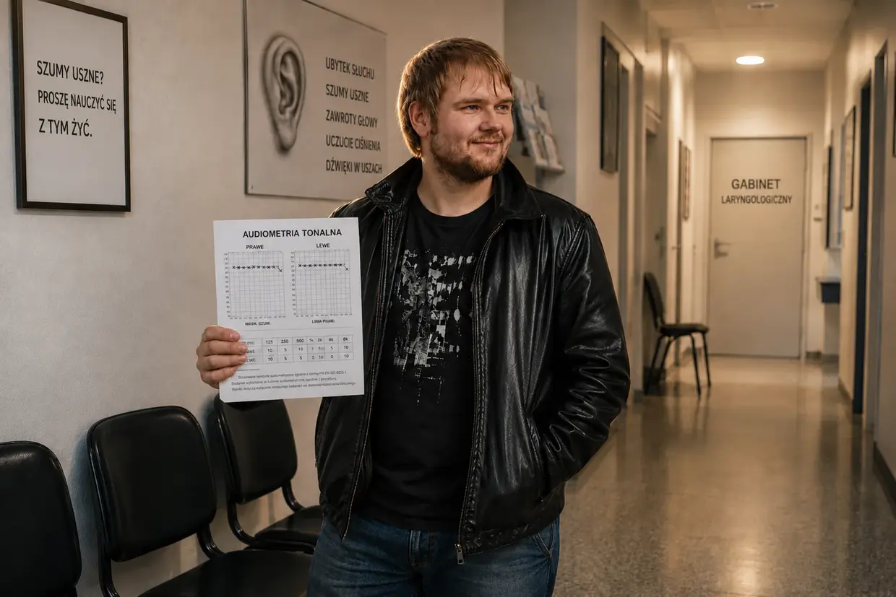

Jak wydostałem się z piekła szumów usznych (krótka wersja)
Cześć, nazywam się Dustin Müller.
Jeśli właśnie trafiłeś na tę stronę, prawdopodobnie tkwisz w tym samym piekle, w którym ja wtedy tkwiłem. Jeśli chcesz przeczytać szczegółową, liczącą 9000 słów historię mojego wyzdrowienia, tutaj znajdziesz pełną biografię.
Jeśli natomiast szukasz szybkich odpowiedzi i głównego wątku: oto zwięzłe podsumowanie tego, jak dzięki żelaznej logice i biohackingowi walczyłem wtedy z własnymi szumami usznymi, aż zeszły ze 100% do 0%.
1. Krach (jesień 2011)
Miałem 23 lata, byłem zdrów jak ryba i wydawało mi się, że moje ciało zniesie wszystko. Jedna wizyta w klubie techno we Frankfurcie (U60), bezpośrednio przed kolumną basową, wystarczyła, żeby odcięło mi zasilanie. Następnego ranka obudziłem się początkowo „tylko” z potężnymi zawrotami głowy, tępym uciskiem w uszach i silnym znoszeniem w lewo. Wydawało mi się, że organizm sam to wyreguluje. Ale trzeciego dnia obudził się prawdziwy potwór: nagle usłyszałem ten piekielny pisk i szum — przede wszystkim w lewym uchu; po prawej stronie był już wtedy słaby pisk. Mój system ostatecznie się zawalił.
2. Porażka systemu („Proszę nauczyć się z tym żyć”)
W panice biegałem od jednego laryngologa do drugiego. Odpowiedzi, które wtedy usłyszałem, były jak cios w twarz: mój słuch miał być trwale uszkodzony, miałem się „nauczyć z tym żyć”. Zalecono mi nawet zagłuszanie tonu muzyką albo „białym szumem” (maskowanie/TRT), a w razie potrzeby zaproponowano leki przeciwdepresyjne. Dopiero kiedy posłuchałem tej rady i nadal bombardowałem się muzyką oraz szumem, kilka dni później szumy uszne znacznie nasiliły się także w prawym uchu.
Z perspektywy czasu to „maskowanie” było dla mnie fatalną radą, która doprowadziła do drugiego całkowitego krachu: ślepo ufając lekarzom, podczas jazdy samochodem do szkoły puściłem głośną muzykę, żeby „odwrócić uwagę”. To była ostatnia kropla, która dobiła moje wyczerpane komórki. W szkole nagle pojawiła się brutalna nadwrażliwość na dźwięki (hiperakuzja), obraz przed oczami zrobił salto (atak zawrotów głowy), a mój narząd równowagi został całkowicie zalany wskutek zastoju jonów w uchu (objawy choroby Ménière’a). Byłem zupełnie odizolowany i nie mogłem już wychodzić z domu.
3. Punkt zwrotny: dowód przeciwko „dźwiękowi fantomowemu”
Później specjalista od szumów usznych próbował mi wmówić, że po kilku miesiącach moje szumy uszne są już tylko „dźwiękiem fantomowym” w mózgu. Przypadek dostarczył mi kontrdowodu: podczas leczenia ostrego zapalenia przewodu słuchowego w szpitalu uniwersyteckim lekarz oczyszczał mi przewody słuchowe głośnym urządzeniem ssącym. Dokładnie w tej samej sekundzie szumy uszne dosłownie eksplodowały w uchu poddawanym działaniu tego bodźca akustycznego!
Dla mnie logika była lodowata: psychologiczny dźwięk fantomowy nie reaguje w czasie rzeczywistym na mechaniczny hałas. Moje szumy uszne nie były czymś niezmiennym. Uszkodzone źródło wciąż tkwiło w uchu — a komórki przy każdym nowym hałasie krzyczały o pomoc.
4. Protokół ciszy

Ponieważ leżałem w szpitalu (na nieskutecznej terapii kortyzonem), moje uszy przez kilka dni były całkowicie odcięte od świata zewnętrznego grubymi opatrunkami z gazy. Tam po raz pierwszy zauważyłem rzeczywiste osłabienie tonu. Wyciągnąłem wnioski, zignorowałem wszystkie lekarskie rady dotyczące „odwracania uwagi” i spędziłem miesiące w niemal absolutnej ciszy. Żadnej muzyki, żadnych słuchawek, żadnego codziennego hałasu. Dzięki temu moje szumy uszne osłabły o około 25% (na wyczucie, jasne — szumów usznych nie mierzy się przecież linijką). Potem jednak proces zdrowienia całkowicie się zatrzymał. Mój organizm utknął.
5. Iskra B12 (lodowata dedukcja)
Sytuacja w rodzinie przyniosła kolejny przełom — tym razem absolutny. Mój ojciec z powodu schorzenia układu nerwowego wstrzykiwał sobie wysokie dawki witaminy B12 i dosłownie odżył.
Wtedy nagle wszystko złożyło mi się w logiczną całość: byłem wegetarianinem od 15. roku życia i przez długi czas cierpiałem na ciężkie przewlekłe zapalenie błony śluzowej żołądka. (To zapalenie żołądka pokonałem zresztą krótko wcześniej dzięki glince mineralnej, probiotykom i łuskom babki jajowatej — pierwszy dowód na to, że lekarze mogą się mylić!) Połączenie diety bez mięsa i chorego żołądka było idealnym przepisem na potężny niedobór B12.
Kierowany tą logiką poprosiłem ojca, żeby również zrobił mi zastrzyk domięśniowy. Ważne: stanowczo odradzam robienie tego bez opieki lekarza. Następnego ranka szumy uszne były znacznie cichsze (poprawa o ok. 40%)! Mój wniosek: B12 jest głównym paliwem do produkcji ATP. Moje komórki wskutek hałasu zużyły do cna ostatnie zapasy ATP. Zastrzyk zalał je energią, „silnik komórkowy” znów ruszył i w nocy mój organizm mógł naprawiać uszkodzenia.
6. Brakujący budulec (błony komórkowe i mielina)
Mimo B12 moje szumy uszne w ciągu dnia wciąż się pogarszały — znów stawały się głośniejsze. Powód? Akumulator co prawda się ładował, ale fizyczna struktura komórek nadal była zniszczona.
Podczas kolejnego bolesnego kryzysu (kolki żółciowej) przypadkiem trafiłem na granulat lecytynowy, który pomógł mi ją złagodzić. Ważne: przy kamieniach żółciowych należy bezwzględnie szukać opieki medycznej — to wyłącznie moje osobiste doświadczenie związane z ostrym epizodem chorobowym, a nie porada dotycząca leczenia. Już trzy dni po pierwszym przyjęciu lecytyny nagle odczułem poprawę o 60–65% — względem stanu wyjściowego!
Biologia, która za tym stała, była dla mnie fascynująca: lecytyna (fosfolipidy) jest ważna nie tylko dla osłony nerwów (osłonki mielinowej), lecz także stanowi podstawowy budulec każdej błony komórkowej. W tamtym czasie tłumaczyłem sobie, że wskutek potężnego stresu oksydacyjnego wywołanego hałasem w klubie ściany moich przeciążonych komórek słuchowych dosłownie stały się kruche i przepuszczalne. W moim ówczesnym modelu B12 dostarczała energii (ATP), a lecytyna pełniła funkcję komórkowego cementu, który miał fizycznie ponownie uszczelnić uszkodzone komórki rzęsate i naprawić niestabilne połączenie w obrębie nerwu słuchowego.
7. „Carpet Bombing” (100-procentowe zwycięstwo)
Aby ostatecznie pokonać wąskie gardło, rozpocząłem bezlitosne ortomolekularne „Carpet Bombing”. Dostarczyłem organizmowi wszystkiego, czego potrzebował do naprawy komórek:
- Wysokie dawki witamin z grupy B (B1, B2, B3, B5, B6, B9, B12) jako sposób na ominięcie problemów wynikających z osłabionego wtedy żołądka
- 30 gramów lecytyny
- Aminokwasy i 3 gramy oleju omega-3 najwyższej jakości
- Witaminę C, minerały (cynk, magnez) i koncentraty składników odżywczych (LaVita, dr Rath)
Wygaszanie tonu:

Dzięki intensywnej podaży składników odżywczych i rygorystycznemu przestrzeganiu ciszy dynamika wreszcie się zmieniła. Każdego ranka ton był coraz cichszy, a wieczorne pogorszenia coraz krótsze. Aż nadszedł ten jeden poranek: obudziłem się, dla kontroli wepchnąłem zatyczki głęboko do uszu i usłyszałem absolutną, wyzwalającą martwą ciszę. Ściemniacz był ustawiony na zero.
W moim ówczesnym rozumieniu osłonka mielinowa była naprawiona, rusztowanie aktynowe komórek słuchowych zostało odbudowane, a mózg wyłączył awaryjny wzmacniacz. Biologia zwyciężyła.
Weź sprawy we własne ręce
Jeśli tkwisz w tej samej ciemności, chcę ci pokazać, że istnieje nadzieja. Na tej stronie dokładnie udokumentowałem, jakie zależności biologiczne odkryłem u siebie i jakie działania biohackingowe pomogły mojemu organizmowi wyjść ze stanu bezradności. To, co zrobisz z tymi informacjami i jak wesprzesz naturalne procesy zachodzące w swoim organizmie — najlepiej w porozumieniu z lekarzem — jest całkowicie w twoich rękach. Moja droga jest moją historią. Czas, żebyś napisał własną.
Ważna informacja:
To, co tutaj czytasz, jest moją osobistą relacją z doświadczeń. Każdy organizm i każda historia są inne.

Upadek w CFS i flush niacynowy
Fatalna reakcja łańcuchowa: upadek w CFS
Kto myśli, że po zakończeniu pierwszego epizodu szumów usznych wszystko było już dobrze, ten się myli. Ten krach, który odbierałem jako zagrożenie życia, nie był jednak „ceną” za ustąpienie szumów usznych, lecz fatalną reakcją łańcuchową, która całkowicie wytrąciła mój organizm z równowagi.
Mój organizm pędził prosto ku przepaści, uwięziony w podstępnym biologicznym paradoksie: żyłem skrajnie i bez przerwy podkręcałem własny organizm na „najwyższe obroty”. Właśnie tę nadwyżkę energii organizm wykorzystał do skutecznego wyleczenia szumów usznych — ale cena była fatalna. Nieświadomie wypalałem przy tym swój ostatni komórkowy akumulator.
Mieszanka nieprzepracowanej traumy z przeszłości, chemicznych następstw kortyzonu, tej nieustannej nadmiernej stymulacji komórkowej i jelit całkowicie zniszczonych przez agresywne antybiotyki (oraz blokery kwasu żołądkowego) ostatecznie wyrwała mi grunt spod nóg.
Kiedy do tego dołączył wirus Epsteina-Barr (mononukleoza zakaźna), mój system całkowicie się zawalił. Diagnoza: zespół przewlekłego zmęczenia (CFS). Przez ponad rok niemal nie wstawałem z łóżka. Mitochondria (elektrownie komórkowe) niemal całkowicie wstrzymały produkcję energii (ATP).
Ślepa uliczka za 6800 euro i moja największa arogancja

W desperacji kupowałem na oślep wszystko. Od amerykańskich gigantów, takich jak Life Extension czy Thorne, przez drogie wlewy witaminy C, aż po leczenie KPU i hormonalną terapię zastępczą. Próbowałem symulowanego treningu wysokogórskiego (IHHT), który musiałem przerwać z powodu paniki, i byłem o krok od przyjęcia do specjalistycznej kliniki CFS.
W ciągu tego jednego roku spaliłem na to szaleństwo — bez ściemy — około 6800 euro. Rezultat? Absolutne zero. Mój organizm nie przyjmował niczego.
Tragikomiczna ironia: podczas nocnych poszukiwań trafiłem na stronę niemieckiej firmy FitLine. Spędziłem tam dokładnie cztery albo pięć sekund, zobaczyłem całą tę oprawę strony i pomyślałem z całą swoją arogancją: „Co to w ogóle za idiotyczna nazwa modnego napoju sportowego? Potrzebuję prawdziwej medycyny, a nie kolorowych soczków”. Całkowicie przeoczyłem przy tym 100-procentową gwarancję zwrotu pieniędzy. Moje ego i półwiedza kosztowały mnie wiele kolejnych miesięcy w piekle CFS.
Rok 2013: flush niacynowy i komórkowy restart
W 2013 roku, w absolutnym punkcie dna, przez 98% czasu leżałem w łóżku. Wtedy YouTube polecił mi film naturoterapeuty, który wyjaśniał wszystko w niezwykle spójny, całościowy i kompetentny sposób. Kiedy zobaczyłem, że jego gabinet znajduje się zaledwie 30 kilometrów ode mnie, zawlokłem się tam resztką sił, bo moja matka stanowczo odmawiała już wożenia mnie do kolejnych lekarzy.
Rozmieszał mi w wodzie proszek — powstał jaskrawo pomarańczowy płyn. Był to dokładnie ten zestaw FitLine, który wcześniej arogancko odrzuciłem!
To, co wydarzyło się po sześciu–ośmiu minutach, było absolutnym szaleństwem: pojawił się potężny flush niacynowy, czyli gwałtowna reakcja zaczerwienienia po niacynie. Całe ciało zrobiło mi się niezwykle gorące, przez żyły ruszyła gigantyczna fala krwi, a skóra się zaczerwieniła. Po raz pierwszy od ponad roku znów poczułem w komórkach prawdziwą, fizyczną energię.
Prawdziwy problem: mój organizm tkwił w potrójnej blokadzie. Po pierwsze, przewód pokarmowy został całkowicie wytrącony z równowagi przez długotrwały stres i antybiotyki (dysbioza). Po drugie, jelitom brakowało po prostu energii komórkowej (ATP), żeby trawić kapsułki w stałej postaci. Po trzecie, moje komórki były tak zakwaszone przez beztlenowy tryb awaryjnego zasilania, że prawie nie wpuszczały już składników odżywczych. Głodowałem na poziomie komórkowym przy pełnych talerzach.
Płynny zestaw składników odżywczych o wysokiej biodostępności nagle przełamał tę potężną blokadę wchłaniania.
Odłożyłem dumę na bok i od tej chwili konsekwentnie przyjmowałem produkty każdego dnia. Rezultaty były niemal surrealistyczne:
- Po 20 dniach: znów mogłem całkiem normalnie chodzić po schodach.
- Po dwóch miesiącach: przestałem być przykuty do łóżka i znów mogłem intensywnie jeździć na rowerze.
- Po trzech–czterech miesiącach: ukończyłem kurs komputerowy bez fizycznego załamania.
- Po niespełna dwóch latach: byłem fizycznie sprawniejszy niż kiedykolwiek wcześniej i pracowałem dla Rewe online przy potwornie ciężkiej harówce — łącznie z dobrowolnymi podwójnymi zmianami!
Wiele lat później: najbardziej szalony eksperyment mojego życia

Ta ciężko wywalczona wiedza o energii komórkowej była brakującym kluczem do zrozumienia ostatecznej matrycy szumów usznych. Ponieważ dzięki regularnemu przyjmowaniu składników odżywczych mój komórkowy zbiornik ATP był teraz stale naładowany do 200% pojemności, logika nie dawała mi spokoju: podczas pierwszego epizodu szumów usznych prawie nie miałem energii i musiałem na pół roku zamknąć się w cichym pokoju. Co się stanie, jeśli teraz, przy tak ogromnym poziomie energii, hałas znów uderzy w mój organizm? Czy naprawi się wtedy niejako „w biegu”, podczas normalnego życia?
⚠️ Ważna informacja: zanim opiszę ten eksperyment, chcę jasno powiedzieć, że mogłem w nim doznać trwałych uszkodzeń. Pod żadnym pozorem tego nie powtarzaj.
Podjąłem decyzję, która dla każdego lekarza byłaby absolutnie szalona: z pełną premedytacją sprowokowałem u siebie drugi epizod szumów usznych, aby udowodnić swoją teorię na własnym ciele.
Wiele lat później całkowicie porzuciłem wszelką ostrożność i bardzo hucznie imprezowałem (z jednej strony dlatego, że chciałem przeprowadzić ten eksperyment, z drugiej — nadal czułem ogromny głód życia po wyzdrowieniu z CFS). Tej nocy odczułem tylko przejściowy sygnał ostrzegawczy (uczucie ciśnienia). To jednak stało się impulsem, żeby doprowadzić wszystko do skrajności. Przez wiele tygodni bombardowałem uszy głośną muzyką w słuchawkach — nawet gdy słuchanie stało się już czystym, fizycznym bólem. Mój instynkt komórkowy krzyczał, ale rozum ignorował ból.
Aż pewnego wieczoru siedziałem przy komputerze, założyłem słuchawki — i w nagłej ciszy usłyszałem delikatny pisk w lewym uchu. Ton wrócił. Z jednej strony czyste przerażenie, z drugiej obłąkana fascynacja.
Aby na potrzeby testu naprawdę „wyhodować potwora” i nie zdusić go od razu swoją tarczą ATP na poziomie 200%, podjąłem lodowatą, skrajnie ryzykowną decyzję: przerwałem cały protokół składników odżywczych — wprowadziłem swoją „karencję”, czyli pełną abstynencję od suplementów — i celowo odstawiłem zestaw FitLine oraz lecytynę.
Krach, panika i dowody na żywo
Minęło od półtora do dwóch miesięcy, zanim mój system ostatecznie załamał się pod wpływem tej ciągłej prowokacji i braku tarczy ochronnej. Szumy uszne wróciły z brutalną siłą — do 75% pierwotnej głośności — a wraz z nimi pojawił się całkowicie nowy chaos dźwięków (typowy pisk sinusoidalny, dziwaczny dźwięk przypominający sygnały kodu Morse’a, głęboki syk i syrena).
Kiedy wieczorem leżałem w łóżku, rzeczywistość uderzyła mnie z całą siłą. Dźwięki były tak ogłuszające, że ogarnęła mnie czysta, zwierzęca panika: czy przez ten idiotyczny eksperyment być może ostatecznie zrujnowałem sobie życie?
Zanim jednak odwróciłem sytuację, dosłownie przetestowałem swój system na absolutnej granicy wytrzymałości:
- Test szczęki i szyi: szerokimi ruchami głowy i szczęki mogłem wyraźnie i bez najmniejszej wątpliwości wpływać na brzmienie oraz głośność dźwięku!
- Test szumu (dowód przeciwko maskowaniu): przez 2–3 minuty bombardowałem się ekstremalnie głośnym białym szumem (dokładnie tym, co lekarze zalecają do maskowania). Gdy zdejmowałem słuchawki, przez kilka sekund panowała absolutna martwa cisza, po czym szumy uszne wyły głośniej i agresywniej niż kiedykolwiek. Mój lodowaty dowód na własnym ciele: szum zmusza chore komórki rzęsate do nieustannego pompowania jonów. Po zdjęciu słuchawek akumulator komórki jest całkowicie rozładowany — przez kilka sekund komórka jest fizycznie martwa i „niema” (okres refrakcji). Gdy tylko odzyska odrobinę energii, sygnał alarmowy wraca z podwójną głośnością!
- Test klaśnięcia (wstrząs mechaniczny): mocne klaśnięcie dłońmi bezpośrednio przed uchem sprawiło, że dokładnie w tej samej sekundzie szumy uszne wściekle zawyły.
Zdrowienie w codziennym życiu (bez „trybu mnicha”)
Następnego ranka miałem dość. Eksperyment osiągnął szczyt. Rozpocząłem odwracanie sytuacji: wróciłem do swojego zestawu regeneracyjnego:
- Kompletny zestaw FitLine (Activize, Restorate, Basics oraz omega-3 z Q10).
- Granulat lecytynowy z drogerii.
Jednej niezwykle ważnej rzeczy tym razem celowo brakowało: nie brałem już gorzkiego proszku aminokwasowego! Stała za tym — moim zdaniem genialna — logika biologiczna: podczas pierwszego epizodu szumów usznych cierpiałem na ciężkie przewlekłe zapalenie błony śluzowej żołądka i nie potrafiłem rozkładać białek ze zwykłego jedzenia. Teraz, po latach, moje trawienie działało idealnie dzięki odbudowie jelit. Zdrowy przewód pokarmowy mógł bez problemu sam pozyskiwać ze zwykłej żywności aminokwasy, które w moim ówczesnym modelu były potrzebne osłonce mielinowej.
Największa różnica: nie miałem najmniejszej ochoty ponownie odcinać się od życia jak za pierwszym razem. Po zwycięstwie nad CFS mój głód życia był po prostu zbyt wielki. Wybrałem inteligentny kompromis: konsekwentnie unikałem skrajnych szczytów hałasu (żadnego radia samochodowego rozkręconego na cały regulator, żadnych słuchawek, żadnych klubów), ale nie wycofałem się całkowicie. Nadal chodziłem na zakupy, do wesołego miasteczka, do kina i żyłem stosunkowo normalnie.
Moment „Co?!” i absolutna cisza
Stało się coś niepojętego: już w pierwszych tygodniach (między drugim a trzecim tygodniem) nagle dotarło do mnie: „Stary, ten ton już reaguje na to, co robię!”
Natężenie dźwięków wyraźnie spadło, a kolejne składowe zaczęły znikać. Najpierw całkowicie zniknął ten zupełnie nowy syk w lewym uchu, potem wyraźnie zaczął cichnąć również nieustanny pisk. Siedziałem kompletnie osłupiały i myślałem: „Co?! Dobra, mocne… Przecież żyję tutaj właściwie zupełnie normalnie, unikam tylko silnych szczytów hałasu, a mimo to ton już reaguje na to, co robię?!”
Proces zdrowienia trwał około trzech do czterech miesięcy. Było to systematyczne wyłączanie kolejnych częstotliwości:
Najpierw ucichły szumy w prawym uchu i po około dwóch miesiącach całkowicie ustąpiły. W lewym uchu blakły syrena i głębokie dudnienie przypominające ciężarówkę, aż pozostał tylko ton sinusoidalny o wysokiej częstotliwości (absolutny boss końcowy).
Tak jak podczas pierwszego epizodu szumów usznych, decydującym wskaźnikiem były poranki. Wyglądało to tak, jakby regulator przesuwał się coraz bliżej linii zerowej. Pod koniec trzeciego miesiąca ton był wieczorem tak cichy, że mogłem go usłyszeć tylko wtedy, gdy w całkowicie cichym pokoju miałem w uszach zatyczki albo siedziałem w zupełnie cichej łazience.
Aby ostatecznie domknąć sprawę, zdobyłem jeszcze specjalne krople z witaminą B12, które codziennie wkraplałem bezpośrednio pod język, żeby przez błonę śluzową jamy ustnej dać organizmowi ostatniego kopa.
I wtedy, któregoś dnia kilka tygodni później, ton zniknął całkowicie. Zniknął. Bez reszty. W 100%.
Przeszedłem ostateczny, najbardziej niebezpieczny test obciążeniowy swojego życia. Wiedziałem teraz z lodowatą, absolutną pewnością: całkowite ustąpienie szumów usznych wywołanych hałasem nie było przypadkiem, szczęściem ani mistycznym przeznaczeniem. W moim przypadku stanowiło logiczny, nieunikniony rezultat tego, że dałem komórce dokładnie to, czego potrzebowała do samodzielnej naprawy — i to nawet w samym środku normalnego życia.
Krótkie, szczere słowo na koniec (bez ściemy)
Wiem dokładnie, jak cała ta historia choroby i powrotu do zdrowia musi brzmieć dla kogoś z zewnątrz. Gdybym sam tego wszystkiego nie przeżył — kaskady absurdalnych „przypadków”, początkowego buntu przeciwko laryngologowi, głębokiego upadku w CFS, nieudanych terapii za 6800 euro i wreszcie tego szalonego „momentu z Matrixa”, w którym algorytm YouTube’a podsuwa mi na ekran film naturoterapeuty, który później okazał się dla mnie ratunkiem, a jego gabinet znajdował się zaledwie 30 kilometrów ode mnie… sam pewnie uznałbym to za tani hollywoodzki scenariusz albo zmyśloną bajkę. Brzmi po prostu zbyt wariacko, żeby było prawdziwe.
Ale właśnie dlatego wykładam tu wszystkie karty na stół. To nie jest zmyślona historia powrotu do zdrowia, chwyt marketingowy, a już na pewno nie bezpodstawna ezoteryka. To lodowata, fizyczna i komórkowa prawda. Mam w ręku wszystkie materialne dowody dokumentujące zarówno to piekło, jak i późniejszy powrót do zdrowia: lekarskie audiogramy wykazujące głębokie ubytki słuchu w poszczególnych pasmach częstotliwości, wyniki badań laboratoryjnych, diagnozy oraz rachunki z klinik i od terapeutów.
Nie opowiadam ci tego wszystkiego, żeby cię zabawić. Opowiadam, bo rozszyfrowałem ten cholerny system — i dlatego, że ta wiedza może uratować twój słuch i twoje noce.
📖 Chcesz poznać całą historię ze wszystkimi szczegółami?
To była krótka wersja w dwóch aktach. Pełną historię — każdy audiogram, każdą rozpaczliwą wizytę u laryngologa, każdy przełom i każdą reakcję chemiczną aż po najdrobniejszy szczegół — opisałem w obszernej wersji. Około 9000 słów, szczerze i bez filtra. Zrób sobie herbatę. ☕
👉 Tutaj przejdziesz do wersji obszernej: Część 1: Piekielna jazda · Część 2: Test wytrzymałości